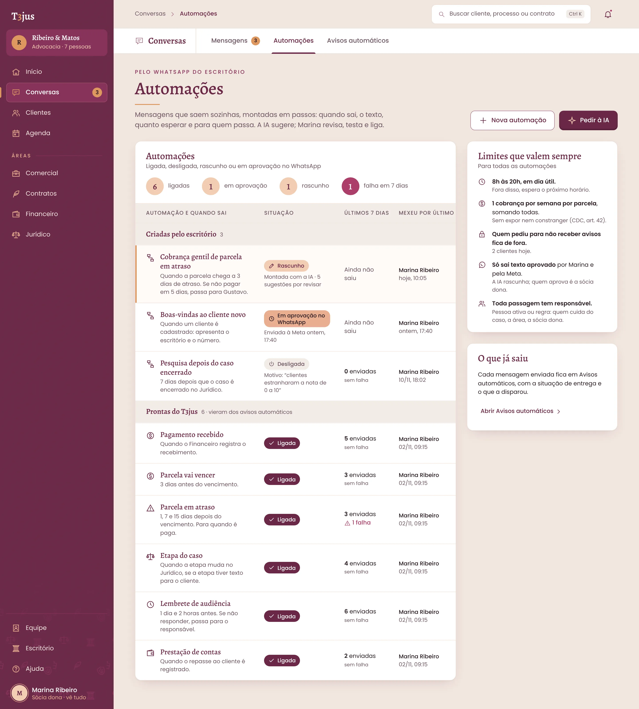

Lista (sócia dona)
Criadas pelo escritório e prontas do T3jus, cada uma com quando sai em linguagem simples, situação (Ligada, Desligada, Rascunho, Em aprovação no WhatsApp), quanto saiu e falhou em 7 dias e quem mexeu por último. Ao lado, os limites que valem para todas. “Nova automação” e “Pedir à IA”.
Abrir: automacoes.html?estado=lista (estreite a janela para ver o celular)